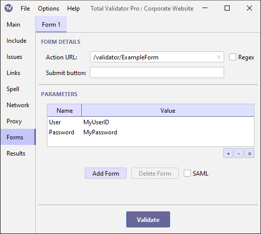

Documentation > Forms options
These options are used to submit forms on a website in order to test any associated pages Typically this is done to log into a site to test authenticated pages.
For more information on using login forms see the Login forms topic and always ensure that you skip any log off and delete links.

Action URL
When Total Validator is testing the site, it will look for a form with an action
attribute, or button or input elements with a formaction attribute, which matches the value entered here.
If it finds a match it will submit the form to the server together with the Parameters provided.
The method or formmethod attribute of the form is used to decide whether Total Validator will
use a GET or POST to submit the form.
If the Action URL is left blank, then this will match all forms that have no action or formaction attribute. In this case the form will be submitted to the same URL as the page itself.
Note that every form that matches the Action URL will be submitted, but only the first matching form on a given page will be submitted.
Regex
The Action URL is normally an exact match for the action or formaction attributes, but you
can use the Regex checkbox to specify that the Action URL is a regular
expression instead. This may allow you to more easily match the required form.
Submit button
Many forms have more than one submit button. For example, one button may be used
to send the form details, and another to reset them.
For normal forms, you can enter the name of the button you wish to send with the form. If a
matching button is found with the same name attribute, then the value of this
button will be submitted with the form, and any other submit buttons ignored. If a
match cannot be found then no submit buttons will be sent. If you do not
enter anything in this field, then the values of all the submit buttons on the form
will be sent.
For forms submitted using a button or input element, only the name of the element (if any)
will be submitted with the form, and so this field is not relevant.
Parameters
When the form is submitted the default values of any form controls (checkboxes, menus, text boxes, hidden controls, etc.) found on the page will be sent to the server just like a normal browser would do.
Normally, you will want to override some of these values with your own, such as a user id or password value, or possibly add extra parameters, using the table provided.
Double-click on the Name or Value cell to enter the parameter details.
Buttons at the bottom of the table allow you to add and delete parameters.
Note that any parameter with a blank name or value will be ignored. But you may use
the same name more than once. All parameters will be
submitted using application/x-www-form-urlencoded encoding, no matter what encoding
is specified on the form.
Additional forms
You can add extra tabs using Add Form, or remove them using Delete Form, so that more than one form may be specified.
To delete all the forms use the Reset Tab menu option.
SAML
If this option is selected then Total Validator assumes that all the forms specified are part of an attempt to authenticate using a SAML-based system such as Shibboleth or Athens. Please see our dedicated SAML topic to ensure you correctly configure Total Validator for this scenario.
Note that setting this option when not using SAML will almost certainly cause your forms to fail to work properly.